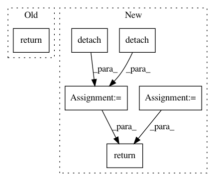

a5eb8d66cf4d433cb5fd0a2cb5cd229077ea54f4,test/lazy/test_cached_cg_lazy_tensor.py,TestCachedCGLazyTensor,create_lazy_tensor,#TestCachedCGLazyTensor#,14
Before Change
mat.requires_grad_(True)
eager_rhss = [torch.randn(5, 10), torch.randn(5, 1)]
return CachedCGLazyTensor(NonLazyTensor(mat), eager_rhss)
def evaluate_lazy_tensor(self, lazy_tensor):
return lazy_tensor.base_lazy_tensor.tensor
After Change
solve, probe_vecs, probe_vec_norms, probe_vec_solves, tmats = CachedCGLazyTensor.precompute_terms(
lazy_tensor, eager_rhs.detach()
)
eager_rhss = [eager_rhs.detach(), eager_rhs[..., -2:-1].detach()]
solves = [solve.detach(), solve[..., -2:-1].detach()]
return CachedCGLazyTensor(
lazy_tensor, eager_rhss, solves, probe_vecs, probe_vec_norms, probe_vec_solves, tmats
)
def evaluate_lazy_tensor(self, lazy_tensor):
return lazy_tensor.base_lazy_tensor.tensor
In pattern: SUPERPATTERN
Frequency: 4
Non-data size: 6
Instances
Project Name: cornellius-gp/gpytorch
Commit Name: a5eb8d66cf4d433cb5fd0a2cb5cd229077ea54f4
Time: 2019-01-02
Author: gpleiss@gmail.com
File Name: test/lazy/test_cached_cg_lazy_tensor.py
Class Name: TestCachedCGLazyTensor
Method Name: create_lazy_tensor
Project Name: richzhang/colorization-pytorch
Commit Name: 7348eb260cb8be71a9d469f9a27a2625b0ce1dce
Time: 2018-08-19
Author: rzhang88@gmail.com
File Name: models/networks.py
Class Name: SIGGRAPHGenerator
Method Name: forward
Project Name: pytorch/pytorch
Commit Name: 0c60922fb0614132433779ad45ab8f30783db2ae
Time: 2021-02-03
Author: haichuan@fb.com
File Name: torch/quantization/_learnable_fake_quantize.py
Class Name: _LearnableFakeQuantize
Method Name: calculate_qparams
Project Name: rusty1s/pytorch_geometric
Commit Name: f6532b3c4c329e6d5d5fb846acc441df47616c4c
Time: 2020-03-22
Author: matthias.fey@tu-dortmund.de
File Name: torch_geometric/nn/models/gnn_explainer.py
Class Name: GNNExplainer
Method Name: explain_node